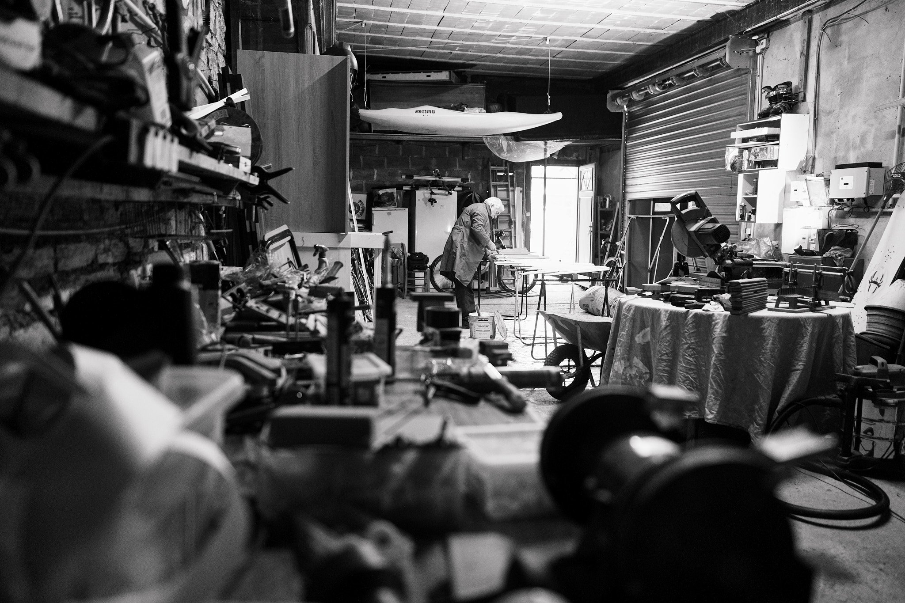
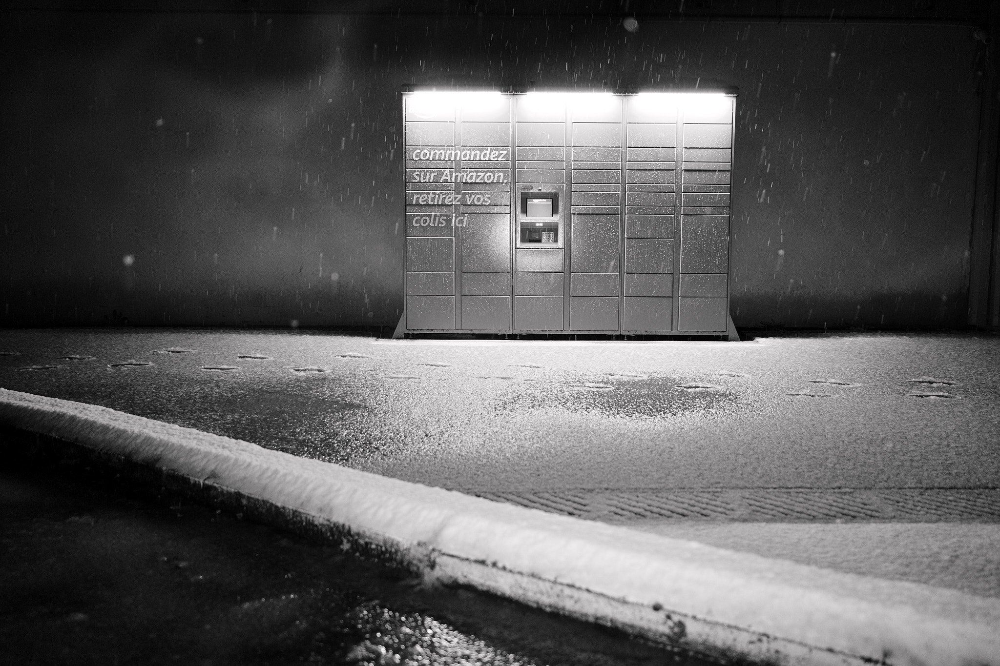
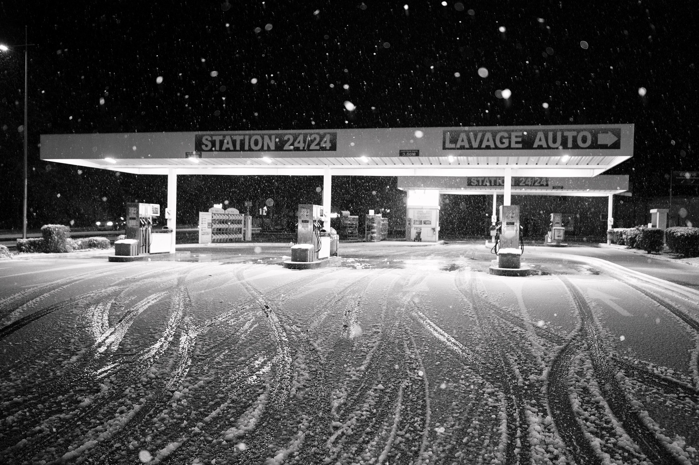
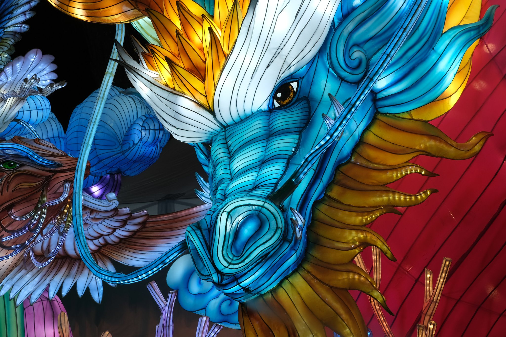
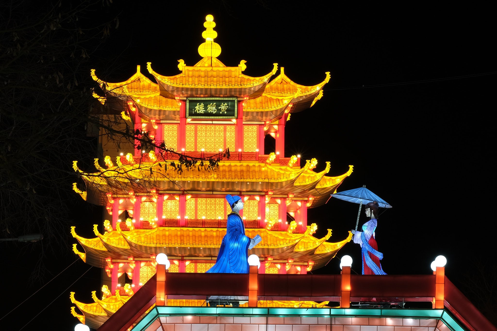
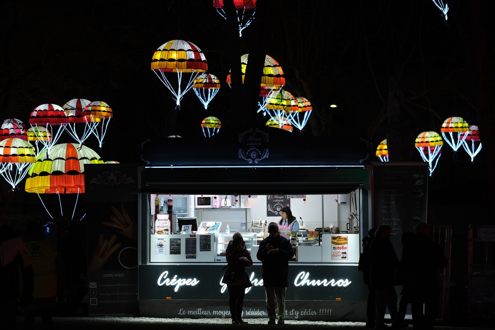
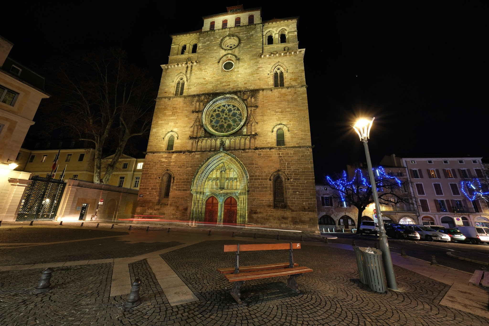
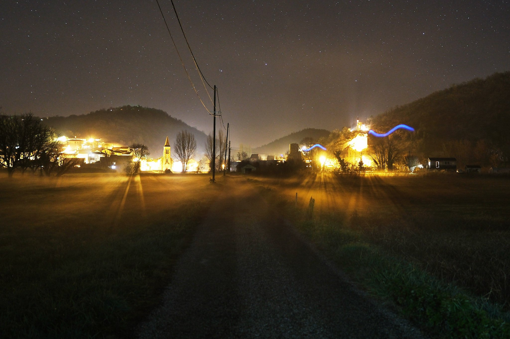
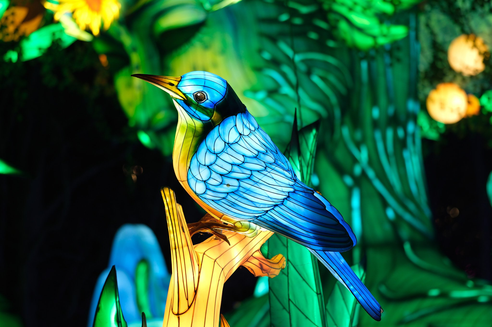
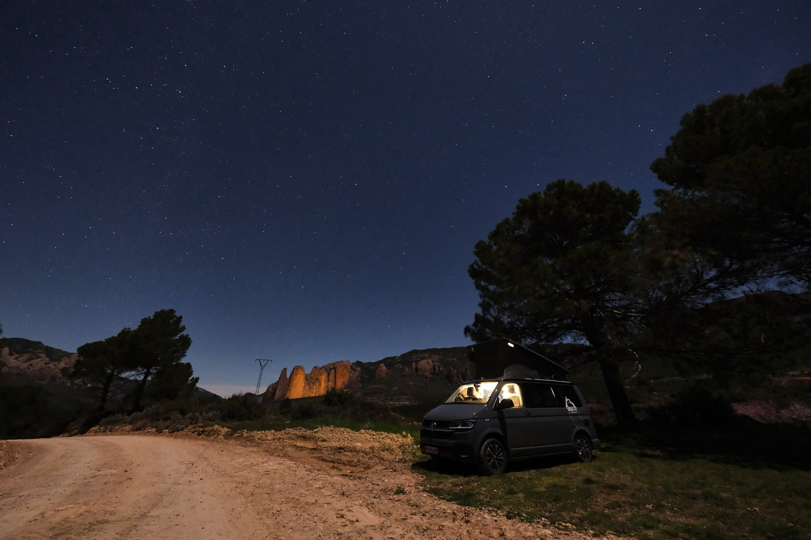

Lot (46) - ISO 800 1/60s f/1.4 18mm - FUJIFILM X-S10
Lot (46) - ISO 4000 1/125s f/2 90mm - FUJIFILM X-T5

Lot (46) - ISO 800 1/60s f/1.4 18mm - FUJIFILM X-S10

Lot (46) - ISO 640 1/100s f/1.4 18mm - FUJIFILM X-S10

Montauban - ISO 160 0.5s f/16 90mm - FUJIFILM X-S10

Montauban - ISO 160 1.7s f/16 90mm - FUJIFILM X-S10

Montauban - ISO 1000 1.250s f/2 90mm - FUJIFILM X-S10

Cahors - ISO 125 10s f/10 8mm - FUJIFILM X-T5
 Cahors - ISO 6400 1/13s f/5 261mm - FUJIFILM X-T5
Cahors - ISO 6400 1/13s f/5 261mm - FUJIFILM X-T5

Cahors - ISO 500 10s f/1.4 18mm - FUJIFILM X-T5

Montauban - ISO 400 1/125s f/2 90mm - FUJIFILM X-T5

Espagne - ISO 3200 8s f/3.5 8mm - FUJIFILM X-T5
❮
 ❯
❯